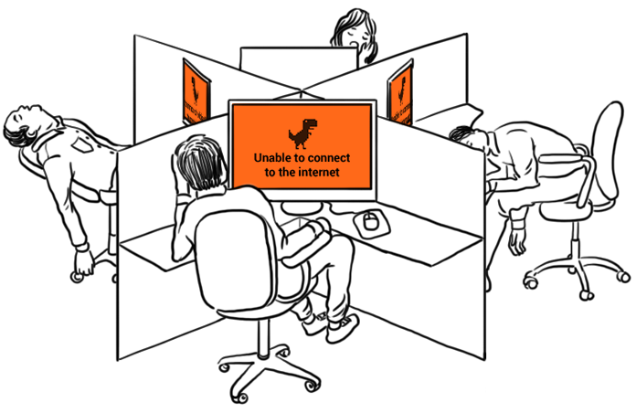

Tired of sitting around and getting frustrated because the internet in your office is down again?
Broadband connections are known to be unreliable, to be excessively slow frequently and to suffer a lot of downtime. Couple that with inadequate customer service and an average of 24 hours response time to connectivity problems, that’s a lot of productivity lost and money down the drain.
How long will you stand back and keep on hoping that the internet works fine today? It’s time to take control and solve this problem once and for all.
The answer is Leased Lines.
Advantages of a Leased Line?
1. No Downtime
A leased line gives your business dedicated band-with just for your business. This means that the bandwith has been reserved solely for your usage. This gives you round-the-clock connectivity and ensures your connections don’t falter, even at peak usage times. Down-time will be a thing of the past.
2. Speed
A leased line connection is far superior when it comes to speed, both for downloads and for uploads. The symmetric nature of leased lines means that they can upload data at the same fast speed at which they can can download data. This is particularly useful if you wish to:
- send large files,
- upload sizable files to your web sites,
- backup data using online services,
- host web sites on a server at your office, or
- use VoIP telephony.
3. LAN Cabling
LAN Cables must be arranged in such a way to promote maximum information flow and bandwidth. With today's high speed networks, it is essential that the networking system must be broken up into shorter chunks that allow workstation wiring to be concentrated for maximum efficiency. In order to achieve the perfect wiring concentration standard, telecommunication rooms (wiring centers) are placed at planned locations within a building. These telecom rooms are then interconnected to provide the total network connectivity for the building.
4. Better Customer Support
When you’re using a broadband connection, and your internet is down, you’re just one among the hundreds of people who are facing the same problem at that very second.
With a leased line, you have your own personal bandwidth connection, which allows us to not only respond to you faster but also fix the problem faster, because of lesser complexities involved.